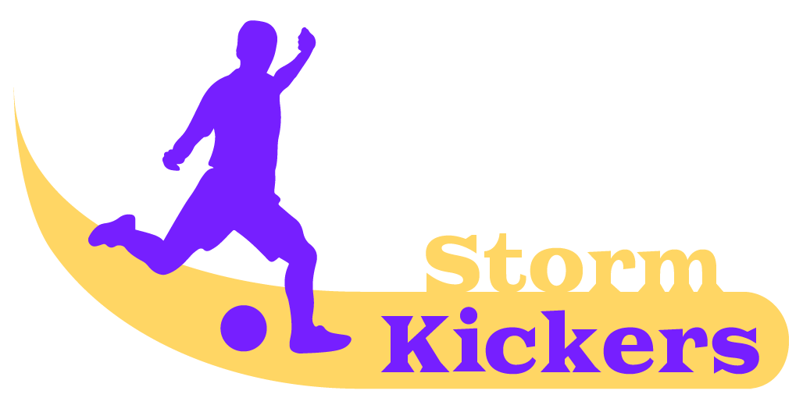

<!doctype html>
<html lang="en">
  <head>
    <title>Title</title>

<!-- Required meta tags -->

    <meta charset="utf-8">
    <meta name="viewport" content="width=device-width, initial-scale=1, shrink-to-fit=no">
    <meta charset="utf-8">
    <meta content="width=device-width, initial-scale=1.0" name="viewport">

<!-- Bootstrap CSS -->

    <link rel="stylesheet" href="https://stackpath.bootstrapcdn.com/bootstrap/4.3.1/css/bootstrap.min.css" integrity="sha384-ggOyR0iXCbMQv3Xipma34MD+dH/1fQ784/j6cY/iJTQUOhcWr7x9JvoRxT2MZw1T" crossorigin="anonymous">
    <link href="https://fonts.googleapis.com/css?family=Open+Sans:300,300i,400,400i,600,600i,700,700i|Raleway:300,300i,400,400i,500,500i,600,600i,700,700i|Poppins:300,300i,400,400i,500,500i,600,600i,700,700i" rel="stylesheet">

<!-- Eigenes CSS -->

    <link href="style.css" rel="stylesheet">

<!-- Font -->

    <link href="https://fonts.googleapis.com/css?family=Open+Sans:300,300i,400,400i,600,600i,700,700i|Raleway:300,300i,400,400i,500,500i,600,600i,700,700i|Poppins:300,300i,400,400i,500,500i,600,600i,700,700i" rel="stylesheet">
  </head>

<body>
      
<!-- Für Mariano's Caroussel -->

    <script src="https://code.jquery.com/jquery-3.3.1.slim.min.js" integrity="sha384-q8i/X+965DzO0rT7abK41JStQIAqVgRVzpbzo5smXKp4YfRvH+8abtTE1Pi6jizo" crossorigin="anonymous"></script>
    <script src="https://cdnjs.cloudflare.com/ajax/libs/popper.js/1.14.7/umd/popper.min.js" integrity="sha384-UO2eT0CpHqdSJQ6hJty5KVphtPhzWj9WO1clHTMGa3JDZwrnQq4sF86dIHNDz0W1" crossorigin="anonymous"></script>
    <script src="https://stackpath.bootstrapcdn.com/bootstrap/4.3.1/js/bootstrap.min.js" integrity="sha384-JjSmVgyd0p3pXB1rRibZUAYoIIy6OrQ6VrjIEaFf/nJGzIxFDsf4x0xIM+B07jRM" crossorigin="anonymous"></script>

</body>
</html>

<body>

<!-- Navbar / Header -->
  <div id="navbar">
    <a href="index.html">
      
    </a>
  <div id="navbar-right">
    <a href="verein.html">Verein</a>
    <a class="active" href="anfrage.html"><b>Mitgliedschaft</b></a>
  </div>
</div>

<!--Mariano's Caroussel :)! -->

<div id="myCarousel" class="carousel slide carousel-fade pb-5" data-ride="carousel">
  <ol class="carousel-indicators">
    <li data-target="$myCarousel"
        data-slide-to="0" class="active"></li>
    <li data-target="$myCarousel"
        data-slide-to="1"></li>
    <li data-target="$myCarousel"
        data-slide-to="2"></li>  
    <li data-target="$myCarousel"
        data-slide-to="3"></li>  
    <li data-target="$myCarousel"
        data-slide-to="4"></li> 
  </ol>

<div class="carousel-inner">
                
  <div class="carousel-item active" data-interval="2000">
    <div class="overlay-image"  style="background-image: url(/verein_zuschnitt.jpg) ;">
    </div>
    <div class="conteiner">
      
    </div>
  </div>

  <div class="carousel-item " data-interval="2000" >
    <div class="overlay-image"  style="background-image: url(/frauen2.jpg);"></div>
      <div class="conteiner">
    </div>
  </div>

  <div class="carousel-item" data-interval="2000">
    <div class="overlay-image"  style="background-image: url(/kids2.jpg);"></div>  
    <div class="conteiner">
       </div>
    </div>   
</div> 

<!-- 3 Carousel Befehle -->
<a href="#myCarousel"
  class="carousel-control-prev" role="button"
  data-slide="prev"> 
  <span class="sr-only">Previous</span>
  <span class="carousel-control-prev-icon"
              aria-hidden="true"></span>
</a>
<a href="#myCarousel"
               class="carousel-control-next" role="button"
               data-slide="next"> 
              <span class="sr-only">Previos</span>
              <span class="carousel-control-next-icon"
               aria-hidden="true"></span>
</a>
</div>

<!-- ======= Vereinsinfo ======= -->

<div class="grid-container">
  <div>
      
  </div> 
    <div>
          <h1><b>Leitbild der Stormkickers</b></h1>
          <h2>Wer sind wir?</h2>
          <h3>Der Schweizerische Fussballverband SK, die nationale Vereinigung für Spitzen- und Breitenfussball, wahrt die
          Interessen des Schweizer Fussballs im In- und Ausland. Den nationalen Auswahlen insbesondere der Schweizer
          A-Fussballnationalmannschaft kommt dabei eine tragende Rolle zu.
          Der SFV nimmt seine Aufgaben zusammen mit den drei Abteilungen Swiss Football League, Erste Liga und
          Amateur-Liga (mit ihren Regionalverbänden) und seinen über 1400 Mitgliedvereinen wahr.</h3>
    </div> 
    
      <div>
        
      </div>
    
</div>

<!-- ======= Footer ======= -->

  <footer id="footer">
    <div class="container">
      <h2>STORM KICKERS</h2>
      <p>Copyright (C) by Storm Kickers Opportunity-Team Zurich</p>
    </div>
  </footer>

<!-- ======= Script ======= -->

    <script src="js.js"></script>

</body>
</html>